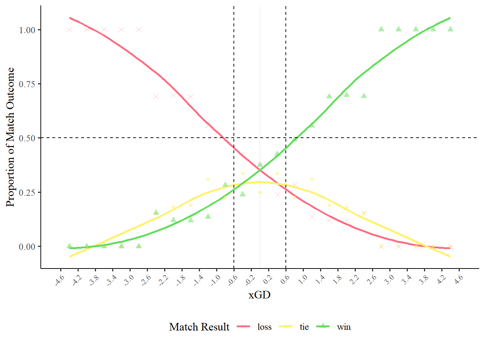

`geom_smooth()` using method = 'loess' and formula = 'y ~ x'

UPDATED APPROACH
The below is probably a better way of doing this that avoids needing to put things in buckets and probably better aligns with what people think of in terms of predicted probability.
To establish a practical significance threshold for interpreting xGD effects, we used multinomial logistic regression to model the relationship between xGD and match outcomes (win, draw, loss). This approach treats xGD as a continuous predictor and estimates the probability of each match outcome across the range of observed xGD values. The model was fit using the nnet package and predicted probabilities were generated across xGD values from −4.6 to 4.6 to identify thresholds where the most probable outcome was either a win or a loss
Figure description: Predicted probabilities for win (green), tie (orange), and loss (red) outcomes as a function of xGD, derived from multinomial logistic regression. Solid lines represent model predictions with 95% confidence intervals. Vertical dashed lines at ±0.60 xGD indicate thresholds that were deemed a meaningful change in xGD.
Simplified dataset
data2 <- data[,.(season,team_name,match_id,xg_diff, rolling_winning_percentage,geodist_sml, east_or_west,match_result) ][,opp_rolling_win_perc :=rev(rolling_winning_percentage), by = match_id]
Just from visual inspection there may be an effect of team location e.g. west coast vs east coast that is confounding the travel result. So we will look to add this in.
$uniformity
Asymptotic one-sample Kolmogorov-Smirnov test
data: simulationOutput$scaledResiduals
D = 0.018004, p-value = 0.8962
alternative hypothesis: two-sided
$dispersion
DHARMa nonparametric dispersion test via sd of residuals fitted vs.
simulated
data: simulationOutput
dispersion = 0.9956, p-value = 0.952
alternative hypothesis: two.sided
$outliers
DHARMa outlier test based on exact binomial test with approximate
expectations
data: simulationOutput
outliers at both margin(s) = 9, observations = 1018, p-value = 0.722
alternative hypothesis: true probability of success is not equal to 0.007968127
95 percent confidence interval:
0.004050347 0.016716113
sample estimates:
frequency of outliers (expected: 0.00796812749003984 )
0.008840864
Have added the below to the manuscript
Model assumptions were assessed using the DHARMa package, which generates simulation-based scaled residuals for mixed-effects models. Visual inspection of the quantile-quantile plot indicated normally distributed residuals (Kolmogorov-Smirnov test: p = 0.90). Tests for dispersion (p = 0.95) and outliers (p = 0.72) were non-significant, indicating no evidence of over- or under-dispersion or influential outliers.
Below helps with the interpretation of the effects
report(finmod,estimator="REML")
We fitted a linear mixed model (estimated using REML and nloptwrap optimizer)
to predict xg_diff with opp_rolling_win_perc, east_or_west,
rolling_winning_percentage and geodist_sml (formula: xg_diff ~ 1 +
opp_rolling_win_perc + east_or_west + rolling_winning_percentage +
geodist_sml). The model included team_name as random effects (formula: list(~1
| team_name:season, ~1 | team_name)). The model's total explanatory power is
substantial (conditional R2 = 0.26) and the part related to the fixed effects
alone (marginal R2) is of 0.16. The model's intercept, corresponding to
opp_rolling_win_perc = 0, east_or_west = H, rolling_winning_percentage = 0 and
geodist_sml = 0, is at 0.36 (95% CI [0.07, 0.64], t(1008) = 2.47, p = 0.014).
Within this model:
- The effect of opp rolling win perc is statistically significant and negative
(beta = -1.19, 95% CI [-1.53, -0.85], t(1008) = -6.95, p < .001; Std. beta =
-0.20, 95% CI [-0.26, -0.14])
- The effect of east or west [N] is statistically significant and negative
(beta = -0.38, 95% CI [-0.59, -0.17], t(1008) = -3.61, p < .001; Std. beta =
-0.32, 95% CI [-0.49, -0.15])
- The effect of east or west [E] is statistically non-significant and negative
(beta = -0.09, 95% CI [-0.39, 0.22], t(1008) = -0.55, p = 0.584; Std. beta =
-0.07, 95% CI [-0.33, 0.19])
- The effect of east or west [W] is statistically significant and negative
(beta = -0.42, 95% CI [-0.73, -0.10], t(1008) = -2.62, p = 0.009; Std. beta =
-0.35, 95% CI [-0.61, -0.09])
- The effect of rolling winning percentage is statistically significant and
positive (beta = 0.90, 95% CI [0.49, 1.31], t(1008) = 4.34, p < .001; Std. beta
= 0.15, 95% CI [0.08, 0.22])
- The effect of geodist sml is statistically significant and negative (beta =
-0.11, 95% CI [-0.21, -0.01], t(1008) = -2.20, p = 0.028; Std. beta = -0.12,
95% CI [-0.24, -0.01])
Standardized parameters were obtained by fitting the model on a standardized
version of the dataset. 95% Confidence Intervals (CIs) and p-values were
computed using a Wald t-distribution approximation.
Global effects
The above section examines the isolated effects of each predictor from the model coefficients. These coefficients tell us the unique contribution of each variable while holding all other variables constant. For example:
The eastward travel coefficient (β = −0.09, p = 0.584) asks: “Does the direction ‘East’ impose a penalty beyond what distance already explains?”
The distance coefficient (β = −0.11, p = 0.028) asks: “What is the effect of each additional 1,000 km traveled, regardless of direction?”
However, in practice, travel scenarios don’t occur in isolation. East coast trips typically involve different distances than West coast trips and teams rarely play away games at exactly zero distance.
Therefore, we also examine the global (marginal) effects which answer the practical question: “What is the expected performance for a typical game in each travel scenario, after controlling for team and opponent quality?”
To estimate these global effects, we generated predictions for each travel direction while:
Holding team rolling win percentage at the dataset mean (36%)
Holding opponent rolling win percentage at the dataset mean (36%)
Allowing distance to reflect the actual observed distances for each travel direction
This approach gives us the total expected effect of each travel scenario as it naturally occurs in the NWSL, combining both the directional effect and the typical distances traveled:
While the predictions above show the expected performance in each travel scenario, the pairwise contrasts quantify the differences between scenarios. This directly answers questions like: “How much worse is westward travel compared to home games?” or “Is there a significant difference between eastward and neutral travel?”